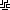

<canvas id="canvas2" width="100" height="100" style="image-rendering: pixelated;"></canvas>



<script>

    function indexToCoords(n) {
        let x = 10 * Math.floor(n % 10)
        let y = 10* (Math.floor(n / 10))
        return [x,y]
    }

    function setup() {
        var cells = [[], [], [], []]
        
        for (let n = 0; n<100; n++) {
            let x = Math.floor(Math.random() * 4)
            cells[x].push(n)
        }
        
        var canvas2 = document.getElementById('canvas2');
        var ctx2 = canvas2.getContext('2d');
        for (let n = 0; n<4; n++) {
            let image = document.getElementById("pattern" + n)
            image.addEventListener('load', e => {
                cells[n].forEach(index => {
                    let xy = indexToCoords(index)
                    ctx2.drawImage(image, xy[0], xy[1]);                  
                })
            })
        }
    }

    setup()

    
</script>
